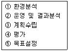
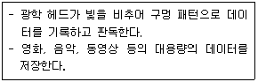
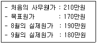
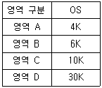
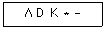
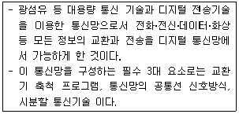
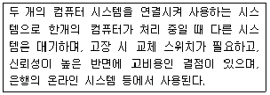

사무자동화산업기사 (2014-09-20 기출문제)
1과목: 사무자동화 시스템
1. 다음의 보기에서 사무자동화의 추진 단계를 올바르게 나열한 것은?

- ① → ② → ③ → ⑤ → ④
- ① → ③ → ② → ⑤ → ④
- ① → ⑤ → ③ → ② → ④
- ① → ⑤ → ② → ③ → ④
(정답률: 84%)

2. 사무자동화(OA)의 접근방법의 유형에 속하지 않는 것은?
- 부분 전개 접근방법
- 업무별 접근방법
- 사원별 접근방법
- 계층별 접근방법
(정답률: 77%)
3. 사무업무와 관련하여 컴퓨터가 지식근로자에게 도움을 줄 수 있는 활동영역과 가장 관계없는 것은?
- 분석
- 수정
- 기획
- 검색
(정답률: 62%)
4. 데이터베이스의 장점으로 옳지 않은 것은?
- 데이터 중복을 최소화하여 자료의 일치를 기함
- 단말기를 통해 요구된 내용을 일괄 처리
- 데이터의 물리적, 논리적 독립성 유지
- 데이터 보안을 유지하여 데이터의 손실방지
(정답률: 50%)
5. 스프레드시트(Spread sheet)패키지의 특성이 아닌 것은?
- 템플레이트(Template)
- 민감도 분석
- 계획과 통제의 도구
- 부프로그램(Sub program)의 관리
(정답률: 74%)
6. 정보를 저장하는 데 사용되는 하드디스크 장치의 용어가 아닌 것은?
- Sector
- Track
- Cylinder
- BOT
(정답률: 85%)
7. 그룹웨어의 기능에 대한 설명으로 틀린 것은?
- 전자우편이나 게시판을 통하여 정보를 공유할 수 있다.
- 지역적으로 떨어져 있는 경우 컴퓨터를 이용하여 전자적으로 회의할 수 있다.
- 비즈니스 규칙이나 작업자들의 역할에 따라 그룹의 업무 처리흐름을 자동화하는 워크플로우 기능이 있다.
- 결재 부문은 전자결재의 위험성을 무시할 수가 없어 반드시 전통적인 방법으로 결재를 한다.
(정답률: 82%)
8. 전자상거래의 특징이 아닌 것은?
- 쌍방향 거래
- 판매공간 불필요
- 영업시간 무제한
- 자격의 제한
(정답률: 85%)
9. 다음 보기에서 설명과 관련이 없는 보조기억장치는?

- CD-ROM
- DVD
- 자기 디스크
- Laser Disc
(정답률: 53%)
10. 사무자동화 수행방식 중 상향식(bottom up) 접근방식의 특징에 해당하는 것은?
- 요구되는 사무자동화 시스템을 단기간에 구축할 수 있다.
- 조직의 전체적인 참여의식이나 의식 개혁이 희박하여 조직 전체로의 확산이 어렵다.
- 기존 조직으로부터의 반발이 크고 전체 조직을 총괄하는 상설 기구가 필요하다.
- 최고 경영자에게 필요한 정보를 즉시 제공할 수 있어서 실효성이 크다.
(정답률: 45%)
11. 큰 프로그램을 보다 작은 프로그램으로 분할해서 하나의 논리적 단위로 묶어서 주기억장치에 읽어 들일 수 있도록 한 것은?
- 서브루틴(subroutine)
- 세그먼트(segment)
- 링키지(linkage)
- 스래싱(thrashing)
(정답률: 76%)
12. 미국의 애플사와 IT사가 공동으로 고안한 디바이스 인터페이스로 파이어와이어(Firewire)라고 불리우며 컴퓨터와 디지털 가전 기기를 연결해 데이터 교환이 가능한 직렬 인터페이스 방식은?
- USB
- SCSI
- IEEE1394
- EIDE
(정답률: 58%)
13. 정보처리시스템의 집중화처리에 따른 문제점이 아닌 것은?
- 전문요원의 절대수 부족
- 컴퓨터 장애 시 업무의 마비
- 회선 비용 절감
- 처리 능력이 낮고 응답시간이 늦음
(정답률: 48%)
14. 사무자동화의 발전에 영향을 미친 것으로 볼 수 없는 것은?
- 산업구조가 농업 및 공업 중심 사회에서 정보화 사회로 변하여 정보의 적기 활용이 요구되고 있다.
- 산업인력의 고학력화로 인하여 개인의 능력이 극대화되어 상대적으로 자동화의 필요성이 줄어들었다.
- 인건비 상승과 사무실 운영비용의 증가로 사무부분의 비용이 증가하고 있다.
- 통신기술의 발달과 함께 컴퓨터 이용이 보편화 되었다.
(정답률: 79%)
15. 전자 출판(DTP)의 특징으로 옳지 않은 것은?
- 타 시스템과의 문서 데이터 교환 및 문서 DB화 수요감소
- 문서 자체의 멀티미디어화
- 자동번역과 번역지원 기능을 이용한 검색 등의 높은 부가가치화
- DTP 기능에 부가한 전자 파일과 다양한 기능을 합친 복합 제품화
(정답률: 79%)
16. 전자상거래의 구성 요소로 적절하지 못한 것은?
- 정보통신 네트워크
- 통합 데이터베이스
- 미니 컴퓨터
- 전자문서 교환
(정답률: 83%)
17. 파일 전송을 위한 프로토콜은?
- HTTP
- FTP
- SSL
- HTML
(정답률: 68%)
18. 동영상 압축 및 복원 알고리즘에 이용되는 것은?
- JPEG
- MPEG
- MIDI
- WAVE
(정답률: 62%)
19. 사무자동화 추진 전략에 포함되지 않는 것은?
- 측정 전략
- 차별화 전략
- 관리 전략
- 교육 전략
(정답률: 47%)
20. 그래픽화면에서 커서의 위치를 제어하는 기능을 갖는 입력장치의 형태가 아닌 것은?
- 마우스(Mouse)
- 스캐너(Scanner)
- 트랙볼(Trackball)
- 조이스틱(Joystick)
(정답률: 80%)
2과목: 사무경영관리 개론
21. 사무처리에서 인용되는 용어인 표준에 관한 설명으로 틀린 것은?
- 일반적으로 관찰한 작업 측정에 준하여 비교할 때 판단의 척도로 사용된다.
- 관찰과 작업 측정에 준하여 일정한 직무명세서나 업무방법을 확정한다.
- 한 번 설정된 표준은 변경되지 않아야 한다.
- 표준은 비교 가능한 작업 단위의 표본조사에 의해 얻어지는 결론을 기초로 하여 세워진다.
(정답률: 67%)
22. 사무관리의 원칙에서 용이성을 옳게 설명한 것은?
- 사무관리를 더 쉽게 할 수 있도록 사무처리의 절차개선
- 의도하는 방향대로 정확하게 처리되고 관리
- 업무수행을 제 때 처리하여 시기를 놓치지 않도록 관리
- 사무처리에 소요되는 비용을 최소화하기 위한 관리활동
(정답률: 58%)
23. 힉스(C.B. HICKS)의 사무업무분류에 관한 내용으로 틀린 것은?
- 커뮤니케이션
- 기록보고서 준비
- 정보보관과 검색
- 기록의 보존과 폐기
(정답률: 43%)
24. 문서자료의 처리완결 후부터 보존되기 전까지의 관리를 무엇이라 하는가?
- 작성
- 보관
- 처리
- 발송
(정답률: 76%)
25. 사무가동 여유율을 구할 때 총시간이 240시간이고 여유시간이 40시간이었다면 여유율은 몇 % 인가?
- 10
- 20
- 30
- 40
(정답률: 52%)
26. 합리적 사무조직을 편성하거나 유효하게 관리하기 위한 행동지침으로서 사무조직의 원칙과 거리가 먼 것은?
- 명령 통일의 일원화 원칙
- 권한 위임의 원칙
- 통제 범위의 적정화 원칙
- 지휘 체계의 다양화 원칙
(정답률: 63%)
27. 사무통제의 방법이 아닌 것은?
- 집중화
- 분산화
- 보고
- 정책
(정답률: 62%)
28. 프로그램 등록 시 프로그램 저작자가 등록할 수 있는 사항이 아닌 것은?
- 프로그램의 용도
- 프로그램의 명칭
- 프로그램의 창작연월일
- 프로그램의 개요
(정답률: 53%)
29. 휴대용 무선기기를 이용하여 콘텐츠를 제공하고 상거래 영역까지 무선 인터넷을 사용하여 비즈니스 서비스를 제공하는 것은?
- M-Commerce
- Virtual Communities
- Collaboration Platforms
- Information Brokerage
(정답률: 80%)
30. 한국저작권위원회의 업무 내용이 아닌 것은?
- 저작권 정책의 수립 지원
- 저작권의 적용 범위 결정
- 저작권 보호를 위한 국제협력
- 저작권의 침해 등에 관한 감정
(정답률: 50%)
31. 정보처리능력을 가진 장치에 의하여 전자적인 형태로 작성, 송수신 또는 저장된 문서는?
- 인증서
- 전자문서
- 전자서명
- 전자결재
(정답률: 81%)
32. 표준, 기계, 활동계획 등에 따라 명확한 목표제시를 보여주는 사무통제 방법은?
- 예산
- 장표
- 절차
- 일정
(정답률: 58%)
33. 프로그램 배타적발행권이 설정행위에 특약이 없는 경우의 존속 기준은?
- 설정행위를 한 다음 날부터 1년간 존속
- 설정행위를 한 다음 날부터 3년간 존속
- 설정행위를 한 날부터 1년간 존속
- 설정행위를 한 날부터 3년간 존속
(정답률: 66%)
34. 경영정보시스템의 주요 형태는 기업구조에 따라 피라미드 구조로 이루어져 있다. 다음 중 가장 상위에 위치하고 있는 것은?
- 거래 처리 시스템
- 중역 정보 시스템
- 정보 보고 시스템
- 의사 결정 지원 시스템
(정답률: 61%)
35. 사무관리의 기능이 아닌 것은?
- 사무작업 실시
- 사무작업 보고
- 사무통제
- 사무관리의 조직화
(정답률: 32%)
36. 아래 자료에서 9월의 원가절감 목표 달성도는?

- 25%
- 50%
- 75%
- 90%
(정답률: 72%)
37. 사무계획의 장점이 아닌 것은?
- 인적‧물적 자원 및 시간의 낭비를 막을 수 있다.
- 사무량을 평준화시킴으로서 혼란과 낭비를 제거할 수 있다.
- 부하직원에 대한 평가가 주관적으로 이루어지므로 사무원의 적재적소 배치가 가능해 진다.
- 사무기기 및 자동화설비의 구입을 비교적 쉽게 할 수 있다.
(정답률: 58%)
38. 자료의 검색‧보존에 사용되는 사무기기는?
- LAN
- 광디스크 시스템
- FAX
- TELEX
(정답률: 60%)
39. 사무소의 위치를 선정할 때의 기준과 거리가 먼 것은?
- 회사인 경우 거래처와의 연락이 편리한 곳
- 지사 혹은 지점이 있을 때 조직 전체에 대한 업무지원을 최대한으로 할 수 있는 곳
- 근처에 생활환경이 편리한 주거시설이 있는 곳
- 유사한 업종이 한 곳에 집합하여 있지 않은 곳
(정답률: 61%)
40. EDI(Electronic Data Interchange)에 대한 설명으로 가장 적절한 것은?
- 기업이 기업만을 대상으로 각종 서비스나 물품을 판매하는 방식을 말한다.
- 기업 간 데이터를 효율적으로 교환하기 위해 지정한 데이터와 문서의 표준화 시스템이다.
- 종이 서류 대신 전산망을 이용하여 문서의 승인이나 신고 등의 업무를 처리하는 시스템이다.
- 어떤 특정한 목적의 응용을 위해 상호 연관성이 있도록 자료를 저장하고 운영할 수 있도록 모아둔 것이다.
(정답률: 76%)
3과목: 프로그래밍 일반
41. 프로그램의 오류 수정 작업을 위해 사용되는 소프트웨어를 무엇이라고 하는가?
- 디버거
- 링커
- 모니터
- 매크로
(정답률: 90%)
42. 프로그래머가 직접 제어를 표현하지 않았을 경우, 그 언어에서 미리 정해진 순서에 의해 제어가 이루어지는 순서 제어는?
- 구조적 제어
- 명시적 제어
- 묵시적 제어
- 분석적 제어
(정답률: 83%)
43. 운영체제의 목적으로 거리가 먼 것은?
- 처리량 향상
- 신뢰도 향상
- 응답시간 단축
- 반환시간 증대
(정답률: 73%)
44. 주기억장치 관리기법 중 최악 적합 기법을 사용할 때, 5K의 프로그램이 할당되는 영역은?(단, 영역 A, B, C, D는 모두 비어 있다고 가정한다.)

- 영역 A
- 영역 B
- 영역 C
- 영역 D
(정답률: 76%)
45. 기계어에 대한 설명으로 옳지 않은 것은?
- 프로그램 작성이 어렵고 복잡하다.
- 컴퓨터가 직접 이해할 수 있어 처리 속도가 빠르다.
- 0 또는 1로만 구성되어 있다.
- 상이한 기계에서 별다른 수정 없이 실행 가능하다.
(정답률: 81%)
46. 프로세스의 정의와 거리가 먼 것은?
- 실행 중인 프로그램
- 목적프로그램을 생성하는 번역 장치
- PCB를 가진 프로그램
- CPU가 할당되는 실체
(정답률: 70%)
47. BNF 표기법 기호 중 “정의된다”를 의미하는 것은?
- ::=
- |
- < >
- { }
(정답률: 88%)
48. 프로그래밍 언어에서 사용되는 가장 일반적인 표현방법으로 연산 기호가 두 피연산자 사이에 표현되는 방법은?
- postfix
- prefix
- infix
- outfix
(정답률: 76%)
49. 재배치 형태의 기계어로 된 여러 개의 프로그램을 묶어서 로드 모듈을 작성하는 것은?
- Cross Compiler
- Linkage Editor
- Operating System
- Preprocessor
(정답률: 57%)
50. 프로그램 수행 순서로 옳은 것은?
- 원시프로그램 → 링커 → 로더 → 목적프로그램 → 컴파일러
- 원시프로그램 → 목적프로그램 → 컴파일러 → 링커 → 로더
- 원시프로그램 → 컴파일러 → 링커 → 로더 → 목적프로그램
- 원시프로그램 → 컴파일러 → 목적프로그램 → 링커 → 로더
(정답률: 79%)
51. 실행 중인 프로세스가 일정 시간 동안에 참조하는 페이지의 집합을 의미하는 것은?
- LOCALITY
- SEGMENT
- MONITOR
- WORKING SET
(정답률: 82%)
52. C언어에서 사용하는 이스케이프 시퀀스(Escape Sequence)의 설명이 옳지 않은 것은?
- ∖n : null character
- ∖r : carriage return
- ∖f : form feed
- ∖b : backspace
(정답률: 66%)
53. 다음 후위식(postfix)을 중위식(infix)으로 옳게 표현한 것은?

- D - ( A * K )
- ( A - D ) * K
- A - ( D * K )
- ( A * D ) - K
(정답률: 54%)
54. C언어에서 사용되는 데이터 형이 아닌 것은?
- long
- integer
- double
- float
(정답률: 81%)
55. 수명 시간 동안 고정된 하나의 값과 이름을 가지며, 프로그램이 동작하는 동안 절대로 값이 바뀌지 않는 것을 의미하는 것은?
- 상수
- 변수
- 포인터
- 블록
(정답률: 66%)
56. 다음의 시스템 프로그램 중 나머지 셋과 성격이 다른 것은?
- 컴파일러
- 로더
- 인터프리터
- 어셈블러
(정답률: 47%)
57. 주어진 BNF를 이용하여 고급언어로 작성된 프로그램을 구문분석 하여 문장을 문법구조에 따라 트리 형태로 작성한 것은?
- 파스(Parse) 트리
- 메뉴(Menu) 트리
- 유도(Guide) 트리
- 덤프(Dump) 트리
(정답률: 86%)
58. C언어의 기억 클래스 종류가 아닌 것은?
- 자동(Automatic) 변수
- 동적(Dynamic) 변수
- 레지스터(Register) 변수
- 외부(External) 변수
(정답률: 55%)
59. 어휘분석의 주된 역할은 원시 프로그램을 하나의 긴 스트링으로 보고 원시 프로그램을 문자 단위로 스캐닝하여 문법적으로 의미있는 일련의 문자들로 분할해 내는 것을 말한다. 이 때 분할된 문법적인 단위를 무엇이라고 하는가?
- 토큰
- 오토마타
- BNF
- 모듈
(정답률: 67%)
60. 로더의 기능 중 실행 프로그램을 실행시키기 위한 기억장치 내에 옮겨 놓을 공간을 확보하는 기능은?
- 연결
- 재배치
- 적재
- 할당
(정답률: 81%)
4과목: 정보통신 개론
61. 전화와 TV의 연결에 의한 정보서비스의 형태는?
- 비디오텍스(videotex)
- 텔리텍스트(teletext)
- 팩시밀리(fax)
- 텔렉스(telex)
(정답률: 60%)
62. 다음 중 패킷교환망에 흐르는 패킷수를 적절히 조절하여 전체 시스템의 안정성을 기하고 서비스의 품질 저하를 방지하는 기능은?
- look up
- poling
- flow control
- closed connection
(정답률: 68%)
63. 주파수분할다중화(FDM) 방식에서 보호대역(guard band)이 필요한 이유는?
- 인접한 채널 사이의 간섭을 방지하기 위해서다.
- 주파수 대역폭을 조정하기 위해서다.
- 좁은 주파수 대역에 많은 채널을 쓰기 위해서다.
- 신호의 세기를 적게 하기 위해서다.
(정답률: 79%)
64. 순환중복 검사 방식에 관한 설명으로 틀린 것은?
- 문자 단위로 데이터가 전송될 때, 에러를 검출하는 방식이다.
- 생성다항식은 CRC-16, CRC-32 등이 있다.
- 수신단에서 CRC 부호로 에러를 검출한다.
- 여러 비트에서 발생하는 집단성 에러도 검출이 가능하여 신뢰성이 우수하다.
(정답률: 39%)
65. 정보 전송 시 사용되는 오류검출 방법이 아닌 것은?
- 블록 합 검사(Block Sum Check)
- 순환 잉여 검사(Cyclic Redundancy Check)
- 프레임 검사(Frame Check)
- 패리티 비트 검사(Parity Bit Check)
(정답률: 59%)
66. 통신의 표준화를 통하여 얻을 수 있는 장점과 거리가 먼 것은?
- 통신하려고 하는 각기 다른 회사나 집단을 만족시킨다.
- 하드웨어와 소프트웨어의 형태는 정형화되어 호환성이 떨어진다.
- 통신시스템 간에 인터페이스를 만족시킨다.
- 사용자가 제품을 구입하는데 융통성을 제공한다.
(정답률: 61%)
67. 패킷 교환 방식에 대한 설명으로 틀린 것은?
- 메시지 교환 방식이 갖는 장점을 그대로 취하면서 대화형 데이터 통신에 적합하도록 개발된 방식이다.
- 패킷교환은 저장-전달 방식을 사용한다는 면에서 메시지 교환과 마찬가지다.
- 음성전송과 같은 실시간 통신에 적합하며, 근거리 데이터 통신망을 위한 교환 방식으로 널리 쓰인다.
- 데이터를 전달하기 전에 연결설정의 필요성에 따라 가상회선 방식과 데이터 그램 방식으로 구분된다.
(정답률: 62%)
68. OSI-7계층에서 종점간(End To End)에 신뢰성 있고 투명한 데이터 전송의 역할을 주로 하는 계층은?
- 물리계층
- 트랜스포트계층
- 세션계층
- 응용계층
(정답률: 50%)
69. 통신 사업자에게 전용 회선을 임대하여 인터넷과 같은 공중망을 통해 사설 네트워크를 구축하는 것으로 기존 사설망의 고비용 부담을 해소하기 위해 사용되는 것은?
- LAN
- MAN
- VAN
- WAN
(정답률: 58%)
70. 다음이 설명하고 있는 정보통신망은?

- 전화망(PSTN)
- 케이블TV망(CATV)
- 종합정보통신망(ISDN)
- 패킷교환 데이터망(PSDN)
(정답률: 66%)
71. 샤논의 정리에 따르면 통신로 용량(Channel Capacity) C는 사용할 수 있는 대역폭 W와 그 채널의 신호대잡음비(S/N비)에 의해 결정된다고 했다. 통신로 용량을 나타내는 식으로 맞는 것은?(문제 오류로 실제 시험에서는 모두 정답 처리되었습니다. 여기서는 3번을 누르시면 정답 처리 됩니다.)
- C=Wlog{10+(S/N)}
- C=Wlog{10+(N/S)}
- C=Wlog{1+(S/N)}
- C=Wlog{1+(N/S)}
(정답률: 58%)
72. 통신 프로토콜(Protocol)의 기본요소가 아닌 것은?
- 구문(syntex)
- 의미(semantic)
- 순서(timing)
- 포맷(format)
(정답률: 83%)
73. 자동 재전송 요청(ARQ) 기법에 해당하지 않는 것은?
- Window-Control ARQ
- Stop-and Wait ARQ
- Go-back-N ARQ
- Selective-Repeat ARQ
(정답률: 64%)
74. 빌딩이나 구내 등의 지리적으로 한정된 범위에서 프로그램 파일 또는 주변장치를 공유할 수 있는 정보통신망으로 가장 적당한 것은?
- LAN
- VAN
- ISDN
- WAN
(정답률: 66%)
75. 패킷교환망에서 DTE와 DCE간의 인터페이스에 관한 규정은?
- X.75
- X.25
- X.29
- X.400
(정답률: 62%)
76. ATM 전송방식에서 헤더를 구성하는 필드 중 교환기와 단말기간의 흐름 제어 기능을 구현하기 위해 사용되는 것은?
- GFC(Generic Flow Control)
- VPI(Virtual Path Identifier)
- PT(Payload Type)
- CLP(Cell Loss Priority)
(정답률: 61%)
77. 다음 설명에 해당하는 시스템은?

- Simplex system
- Duplex system
- Multi point system
- Multi processor system
(정답률: 53%)
78. 데이터 링크 제어 중 흐름제어 방식인 슬라이딩 윈도우 방식에 대한 설명으로 틀린 것은?
- 수신측의 버퍼가 차게 되면 전송중지를 요구하고, 버퍼가 어느 수준 이하로 비게 되면 전송 재개를 요청한다.
- 윈도우 흐름 제어는 수신 스테이션으로부터 응답 메시지가 없더라도 미리 약속한 윈도우 크기만큼의 데이터 프레임을 연속적으로 전송할 수 있는 방식이다.
- 송신측 윈도우는 응답 프레임을 수신하지 않고도 전송할 수 있는 데이터 프레임의 범위를 나타낸다.
- 윈도우 크기는 송신 스테이션이 수신 스테이션으로부터 응답 없이도 전송할 수 있는 데이터 프레임의 최대 개수를 제한한다.
(정답률: 24%)
79. 동기식 전송방식에 대한 설명으로 옳은 것은?
- 각 데이터의 앞과 뒤에 start bit와 stop bit를 첨가한다.
- 송신기와 수신기가 각각 다른 클록을 사용하여 데이터를 송수신하는 방식이다.
- 수신측에서는 parity bit를 이용하여 오류를 검출한다.
- 비동기 전송에 비해 훨씬 고속의 데이터 전송이 가능하다.
(정답률: 49%)
80. 데이터 통신에 사용되는 패킷(Packet)을 가장 잘 설명한 것은?
- 회선교환방식에 주로 사용되며, 주 스테이션 사이에 통신할 수 있는 경로가 제공되는 경우를 말한다.
- 전송 혹은 다중화의 목적으로 메시지를 정해진 크기의 비트 수로 나눈 다음 정해진 형식에 맞추어 만들어진 데이터 블록이다.
- 버스형망, 회선 교환망, 성형망 등의 어떤 망구조에서도 편리하게 사용할 수 있는 데이터 교환방식에 가장 적합한 전송회선이다.
- 경로 변경방식에 따라 교환기, 통신회선 등의 장애가 발생할 경우 대체 경로를 선택할 수 없어 네트워크의 신뢰성이 낮다.
(정답률: 60%)
① 자동화 가능성 조사 및 분석
② 시스템 구축 및 개발
③ 시스템 운영 및 관리
④ 시스템 평가 및 개선
⑤ 시스템 도입 및 교육
따라서, "① → ⑤ → ③ → ② → ④"가 정답이다. 먼저 자동화 가능성을 조사하고 분석한 후, 시스템을 도입하고 교육을 실시한다. 그리고 시스템을 운영하고 관리하며, 시스템 구축 및 개발을 진행한다. 마지막으로 시스템을 평가하고 개선한다.